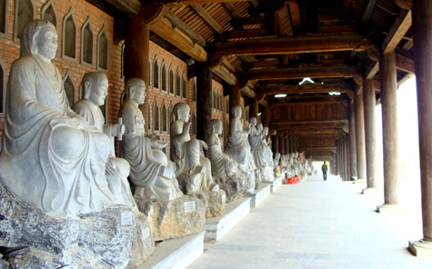
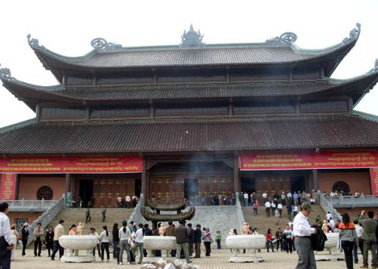
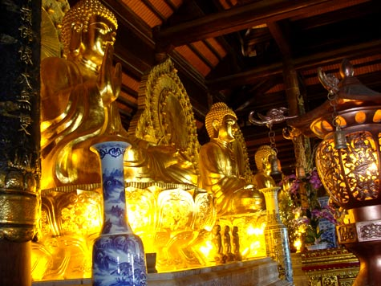

Lễ hội Chùa Bái Đính
Lễ hộiMùa xuân mới tràn về cũng là lúc trên đất Cố đô Hoa Lư, hàng triệu phật tử cả nước cùng du khách khắp thập phương lại nô nức trẩy hội chùa Bái Đính.
Chùa Bái Đính là một quần thể chùa nằm trên núi Bái Đính, xã Gia Sinh (Gia Viễn). Quần thể chùa này gồm một khu chùa cổ và một khu chùa mới được xây dựng từ năm 2003. Chùa Bái Đính thuộc Khu di tích lịch sử cố đô Hoa Lư, với nhiều kỷ lục được xác lâp bởi Trung tâm kỷ lục Việt Nam như: Khu chùa rộng nhất Việt Nam (107ha); Tượng phật bằng đồng lớn nhất Đông Nam Á (Tượng Phật Tổ Như Lai nặng 100 tấn, ba pho Tam Thế, mỗi pho nặng 50 tấn); hai quả chuông lớn nhất Đông Nam Á (36 và 27 tấn); chùa có nhiều tượng La Hán lớn nhất Việt Nam (500 vị bằng đá xanh cao khoảng 2m); Khu chùa có giếng lớn nhất Việt Nam; số cây bồ đề nhiều nhất Việt Nam (100 cây bồ đề được chiết từ cây bồ đề Ấn Độ)...

Ngày mồng sáu tháng giêng là ngày khai hội. Lễ hội trước kia chỉ kéo dài đến 1 tuần. Nay với sự quan tâm đầu tư cả nhà nước, khu chùa được mở rộng trở thành khu văn hóa tâm linh tầm cỡ, to đẹp và nổi tiếng, nên lễ hội chùa Bái Đính sẽ diễn ra trong suốt mùa xuân. Trước ngày mở hội và ngay cả trong thời gian đón tết, tất cả các động, chùa trên Khu núi Bái Đính đều khói hương nghi ngút, không khí lễ hội bao trùm cả vùng quê chiêm trũng vốn thanh bình yên ả.
Phần lễ ở chùa Bái Đính diễn ra tương đối trang trọng vì ở đây không chỉ thờ các vị Sơn thần, Phật tổ, Bà chúa Thượng ngàn mà còn gắn với nhiều sự kiện lịch sử trọng đại của dân tộc với các danh nhân đức Thánh Nguyễn, Quang Trung, Đinh Bộ Lĩnh. Vì vậy, phần lễ gồm tổng hòa hệ thống tín ngưỡng tôn giáo ở Việt Nam; có sự sùng bái tự nhiên, có Đạo, có Phật và có cả Nho. Ngày hội, làng tổ chức rước thần từ động ra. Cờ trống đi trước, dàn nhạc bát âm kéo theo, trai thanh gái lịch phù kiệu, cụ ông cụ bà thành tâm tiễn thần, trang nghiêm mà sảng khoái.

Trong suốt những ngày hội là sự nồng nhiệt của tuổi trẻ, là sự thành kính của các bậc cao niên, sự hoan hỷ mà các du khách, phật tử ai ai cũng có phần riêng của mình. Cả ở những triền núi thấp cao, những rừng cây, rừng thuốc… là tấp nập, rộn ràng những đoàn người trẩy hội. Người đi ra đi vào, người đi lên đi xuống... tất cả đều hồ hởi, phấn khởi. Và khi họ gặp nhau, dù quen hay không quen cũng vui vẻ chào nhau bằng một lời chào: "Nam mô a di đà Phật" nhẹ nhàng, đằm thắm và ấm áp…
Núi Bái Đính đứng độc lập, sừng sững giữa vùng bán sơn địa, được tạo thành bởi hai dãy núi khép lại hình cánh cung và hướng về phía tây - tựa như tay ngai, mở ra một thung lũng rộng hơn 3 ha - gọi là Thung Chùa. Lên thăm hang động ở núi Bái Đính, du khách bước trên 300 bậc đá, càng lên cao không khí càng trong lành và thoáng mát, cảm thấy mọi lo toan trong cuộc sống đời thường dường như bị quên lãng. Giữa đường lên động có Hang Voi phục ở bên phải, hang thờ Đức Ông Mặt Đỏ, là người canh giữ khu chùa Bái Đính.
Theo lộ trình, du khách lên hết dốc là tới ngã ba: Bên phải là động thờ Phật, bên trái là động thờ Tiên. Bước khoảng vài chục bước chân, du khách sẽ phải sửng sốt đến kinh ngạc trước Động thờ Phật. Phía trên cửa động có 4 chữ đại tự khắc trên đá, có nghĩa là: “Lưu Danh Thơm Cảnh Đẹp”. Với sự hiện diện của các pho tượng uy nghiêm ẩn, hiện trong làn hương trầm đang lưu chuyển ở nơi động cao, du khách cảm nhận như lạc vào cõi tiên với những suy nghĩ kỳ bí, huyền diệu.

Cắm hương nhang, niệm điều tâm phúc xong, du khách đi tiếp theo ngách đá bên trái cuối động sẽ dẫn tới một hang nhỏ hơn, đó là hang thờ Thần Cao Sơn - một vị tướng tài của Vua Hùng. Nếu du khách bước tiếp sẽ tới một cửa hang sáng và rộng, một thung lũng xanh hiện ra. Tương truyền rằng đây là nơi có nhiều cây thuốc quý mà Thánh Nguyễn Minh Không thường xuống hái lượm mang về chế thuốc tiên. Hiện nay lá thuốc vẫn được người dân địa phương sử dụng làm dược liệu.
Trở lại ngã ba đầu dốc, du khách theo đường rẽ trái khoảng 50m là tới Động Tiên. Động Tiên lớn hơn động Phật nhiều lần, gồm 7 “buồng”, tức là 7 hang, có hang trên cao, có hang ở dưới sâu, các hang đều thông nhau qua nhiều ngách đá, có hang nền bằng phẳng, có hang nền trũng xuống như lòng chảo, có hang trần bằng, có hang được tạo hoá ban tặng cho một trần nhũ đá rủ xuống muôn hình vạn trạng lung linh huyền ảo.
Bà Chúa Thượng Ngàn được đặt thờ giữa hang chính với các tượng bằng đá được sơn son thiếp vàng. Xung quanh Chúa Thượng ngàn là rừng nhũ, rừng hoa nhũ đá đẹp mê hồn. Bằng sự tưởng tượng tinh tế, với một cái nhìn xa rộng, du khách có thể dễ dàng đặt tên cho từng cây nhũ, mỏm đá ở Động Tiên này. Mỗi nhũ đá, mỗi hòn đá trong Động Tiên là một kiệt tác của tạo hoá, là một tinh hoa của thời gian trên đá, và chỉ có “nước chảy, đá mòn” hàng ngàn vạn năm mới tạo nên những điều kì diệu đó.
Du khách đến lễ hội chùa Bái Đính sẽ cảm nhận được tình yêu thiên nhiên trong ngày hội lịch sử để từ đó hướng về quá khứ dựng nước của cha ông ở một làng quê chiêm trũng. Leo núi chơi hang, chơi động lý thú, được cùng du khách tham gia và hưởng ứng, vì vậy mà leo núi Bái Đính dẫu có mệt, nhưng có cảnh có người và có không khí của ngày hội nên ai cũng cảm thấy thích thú với cuộc chơi sông núi của mình.
Cuộc hành hương về chùa Bái Đính tạo ra trong con người tâm lý kỳ vọng, muốn vươn đến cái đẹp, cái thiện. Và sự kỳ vọng cái đẹp sẽ làm cho chúng ta thêm phần sảng khoái, thêm tin yêu cuộc đời này hơn, mỗi người sẽ tìm thấy sự thanh thản trong tâm hồn và hướng đến cái thiện. Các hoạt động trong những ngày lễ hội diễn ra sôi nổi với đấu vật, ném còn, đánh bài, kéo co, các trò chơi dân gian ngày Tết được đông đảo du khách hưởng ứng, diễn ra nhộn nhịp, sôi nổi.
Nguồn: Báo Ninh Bình điện tử